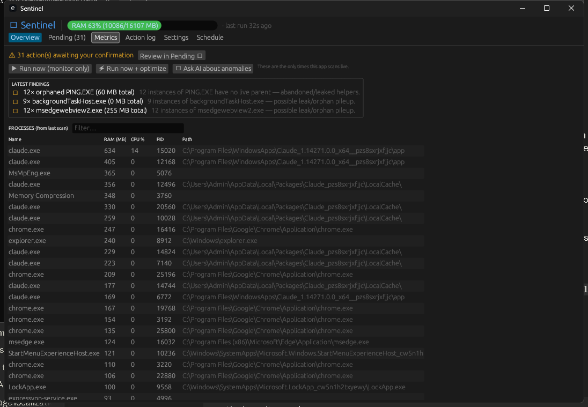
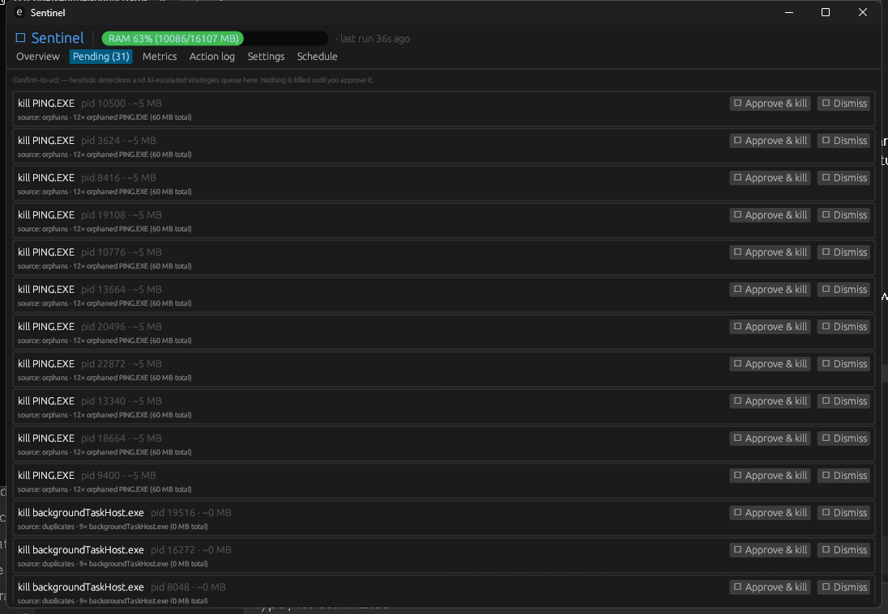
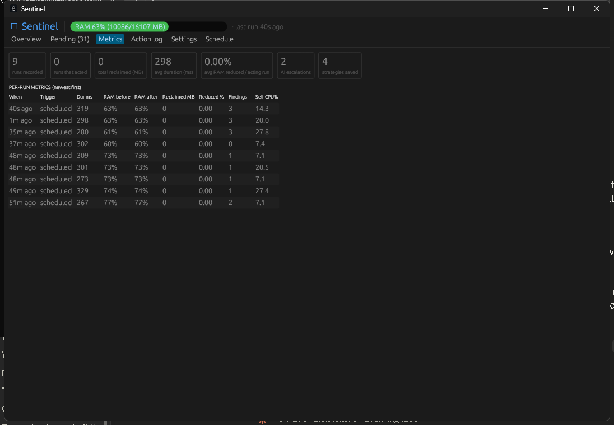
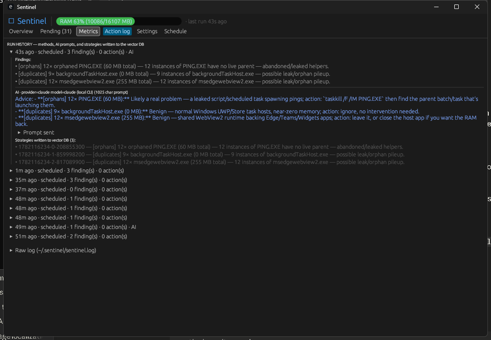
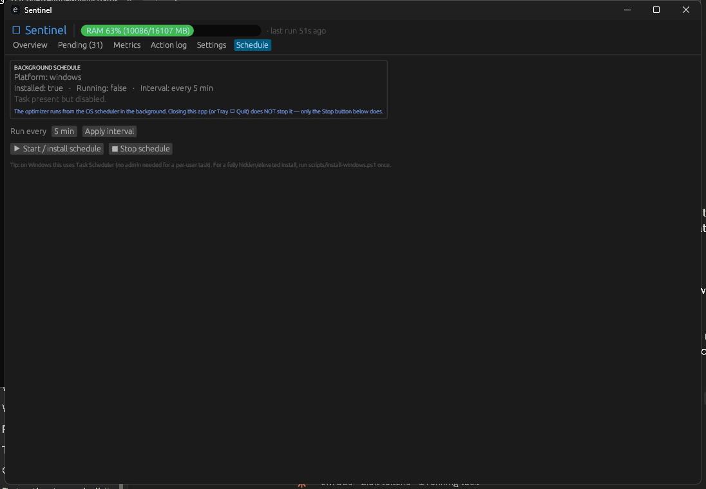

A lightweight RAM optimizer for heavy Claude Code / Claude Desktop users on machines with limited RAM (8–16 GB). Reaps duplicate, orphan, and leaking processes — for any app — so multiple sessions keep running without thrashing.

Watches system-RAM pressure and reclaims what's safe so a few Claude sessions don't tip you into swapping.
Detects duplicate and orphaned helpers (dead parent) and memory leaks — generic across every process, not just Claude.
Heuristic and AI-suggested kills are proposals you approve. Only the rules you write run automatically.
A one-shot the OS scheduler runs every few minutes (~0.3 s), then exits. The viewer is opened on demand.
Closing the app or quitting from the tray never stops the background optimizer — only the Stop button does.
Per-run RAM/CPU/duration and effectiveness; optional AI diagnosis with Upstash Vector strategy memory (off by default).




git clone https://github.com/game-libgdx-unity/ram-optimizer-for-windows cd ram-optimizer-for-windows cargo install --path . cp config.example.json config.json ram-optimizer ui # open the dashboard
Windows: a self-built binary is unsigned, so Smart App Control / SmartScreen may block it — see the README's Troubleshooting section for how to handle SAC.